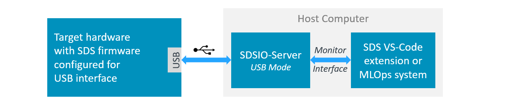
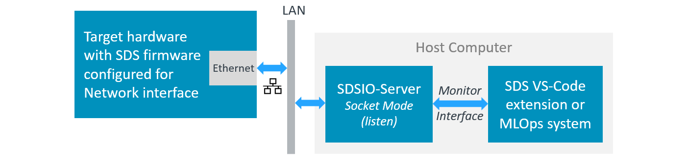
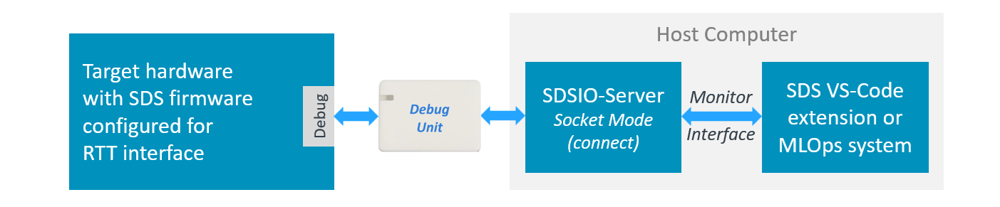

SDSIO Interface
The SDSIO components offer flexible SDS communication interfaces. You may choose between these interface components that are stored in the folders: sds/sdsio/client, sds/sdsio/fs or sds/sdsio/vsi. You may use one of the following CMSIS software components for integration of the SDSIO interface into the target system:
- component: SDS:IO:Socket # IoT Socket Interface (Ethernet or WiFi)
- component: SDS:IO:USB&MDK USB # USB Interface
- component: SDS:IO:RTT # RTT Interface
- component: SDS:IO:Serial&CMSIS USART # USART Interface
- component: SDS:IO:File System&MDK FS # Memory card
- component: SDS:IO:VSI # VSI Simulation interface of an AVH FVP
- component: SDS:IO:Custom # Source code template for custom implementation
To simplify usage further, pre-configured SDS interface layers in csolution project format are available. These connect via various interfaces to the SDSIO-Server, which provides read/write access to SDS data files. The following SDS interface layers are available in the pack ARM::SDS:
- Ethernet Interface using the MDK-Middleware Network component.
- USB Bulk Interface using the MDK-Middleware USB component.
- RTT Interface using the SEGGER RTT component.
- Memory Card Interface using the MDK-Middleware File System component.
- VSI Interface using the ARM FVP simulation VSI interface.
Layer: sdsio_usb
The layer/sdsio/usb/sdsio_usb.clayer.yml is configured for recording and playback via the USB interface. It uses the MDK-Middleware USB Device component and connects to a host computer through a USB interface.

Using USB Interface
To access SDS data files, configure the *.sdsio.yml file with the interface - usb: node and start the SDSIO-Server on the host computer with:
>python sdsio-server.py -c myproject.sdsio.yml
SDSIO-Server v3.0.0
Press 'Ctrl+C' or 'X' to exit.
Working directory: ...\SDS_data
SDSIO configuration YAML: ...\myproject.sdsio.yml
SDSIO command input: R=Record, P=playback, S/s=stop, T/t=reset, X/x=exit, A-H=set flags 0-7, a-h=clear flags 0-7.
SDSIO-Server waiting for USB SDSIO-Client...
SDSIO-Client USB device connected.
Layer: sdsio_network
The layer/sdsio/network/sdsio_network.clayer.yml is configured for recording and playback via the Ethernet interface. It uses the MDK-Middleware Network component. Both the target hardware and the SDSIO-Server are connected to a local LAN.

Note
- The target device and the host computer must be connected to the same network. With a standard network installation, the DHCP server assigns IP addresses automatically.
- On Windows, a firewall may restrict socket connections. To allow the SDSIO-Server through the Windows Defender Firewall:
- Open Windows Security - Firewall & network protection - Allow an app through firewall.
- Click Change settings, then allow your Python runtime (
python.exe) on the network profile you use (usually Private). - On a managed corporate PC, Group Policy or endpoint security may still block connections. Your IT administrator may need to whitelist the IP address and port.
Using Network Interface
To access SDS data files, configure the *.sdsio.yml file with the interface - socket: node for Network interface, and start the SDSIO-Server on the host computer with:
>python sdsio-server.py -c myproject.sdsio.yml
SDSIO-Server v3.0.0
Press 'Ctrl+C' or 'X' to exit.
Working directory: ...\SDS_data
SDSIO configuration YAML: ...\myproject.sdsio.yml
SDSIO command input: R=Record, P=playback, S/s=stop, T/t=reset, X/x=exit, A-H=set flags 0-7, a-h=clear flags 0-7.
SDSIO-Server listening on 172.20.10.2:5050
Note
The SDSIO-Server prints the IP address on which it is listening. The target hardware must connect to this IP address. Configure the target by updating the SDSIO_SOCKET_SERVER_IP macro in layer/sdsio/network/RTE/SDS/sdsio_client_socket_config.h.
Layer: sdsio_rtt
The layer/sdsio/rtt/sdsio_rtt.clayer.yml is configured for recording and playback using the SEGGER RTT component for I/O via a debug adapter.

Using RTT Interface
The SDSIO layer communicates with the host computer via an RTT socket exposed by the debug probe software. The SDSIO-Server runs on the host and connects to the debug probe socket using socket connect mode.
Connect with SEGGER J-Link
Configure interface: in the *.sdsio.yml control file as shown below:
sdsio:
interface:
socket:
ipaddr: 127.0.0.1
port: 19021
connect: "$$SEGGER_TELNET_ConfigStr=RTTCh;1$$"
connect-time: 100
Then start the SDSIO-Server with:
python sdsio-server.py -c myproject.sdsio.yml
How it works:
J-Link exposes RTT data via a TELNET-like TCP socket on localhost, port 19021 (default), while a J-Link connection is active (typically during a debug session). After connecting to this TCP socket, the SDSIO-Server (sends within the 100 ms time limit) the SEGGER TELNET Config String that selects the RTT channel. The SDSIO-Server sends this string automatically via --connect, and discards any initial response from J-Link during the --connect-time window.
Connect with pyOCD
pyOCD can expose each RTT channel as a TCP socket server. RTT is configured under the debugger: node of the *.csolution.yml file as shown below. Refer to CMSIS-Toolbox - pyOCD - RTT for further details.
target-types:
- type: MyHardware
target-set:
- set:
images:
- project-context: DataTest.Debug
debugger:
name: CMSIS-DAP@pyOCD
clock: 10000000
protocol: swd
rtt:
channel:
- number: 1 # must match SDSIO_RTT_CHANNEL in sdsio_client_rtt_config.h
mode: server
port: 5100 # any free TCP port on localhost
Configure interface: in the *.sdsio.yml control file as shown below:
sdsio:
interface:
socket:
ipaddr: 127.0.0.1
port: 5100 # must match the port configured in *.csolution.yml
connect: # no connect string required; channel is configured with `rtt:` node above
The CMSIS-Toolbox includes all project configuration in the file *.cbuild-run.yml. Once this file is up-to-date, run pyOCD and SDSIO-Server with:
pyocd run --cbuild-run out/<name>+<target-type>.cbuild-run.yml --eot
python sdsio-server.py -c myproject.sdsio.yml
How it works:
pyOCD does not require a connect message. Instead the RTT channel configuration is part of the *.cbuild-run.yml file that also specifies project files and other hardware related parameters. Refer to CMSIS-Toolbox - Run and Debug Configuration for further information.
For CI runs that should stop automatically after SDS playback, start pyOCD with --eot and run SDSIO-Server with --playback --exit-after-playback. After playback completes, SDSIO-Server sets SDS_FLAG_TERMINATE. The target application can then write EOT (0x04). pyOCD can terminate on this character only when it receives the target standard output stream, for example through semihosting or RTT stdio. If standard output is retargeted directly to UART, the character bypasses pyOCD and --eot will not stop the pyOCD run.
Layer: sdsio_fs
The layer/sdsio/filesystem/sdsio_fs.clayer.yml is configured for recording to a Memory Card. It uses the MDK-Middleware File System component.
Using File System Interface
The file system interface, used together with a template, enables recording of SDS data files to the SD card on the embedded board.
Recording can be started and stopped using the on-board user button.
Once the desired number of recordings has been captured, the SD card can be removed and transferred to a PC for review, copying, or labeling of the recorded data.
Note
The template-based file system implementation natively supports recording mode only. Playback mode can be enabled by adapting the provided template code. For example, an additional button on the board can be used to toggle between recording and playback modes.
Layer: sdsio_fvp
The template/sdsio/fvp/sdsio_fvp.clayer.yml targets AVH FVP simulation and is configured for playback from the host computer or a CI system. It uses the SDSIO VSI interface implemented by the file vsi/python/arm_vsi3.py, which is loaded by the FVP simulation model. Since the SDSIO-Server functionality is implemented in arm_vsi3.py, no separate SDSIO-Server is required.
The VSI3 Python script (arm_vsi3.py) is tested with Python 3.13 and has requirements to the modules pyyaml and asyncio that can be installed with:
pip install pyyaml asyncio
Using FVP Simulation Models
VSI3 implements the SDSIO VSI interface and is designed for regression testing on host computer and CI systems. The tests cases are configured using a *.sdsio.yml control file.
VSI3 locates a *.sdsio.yml control file as follows:
- If the environment variable
SDSIO_FVPis set, it must be an absolute path to either a config file or a directory:- File — used directly as the config file.
- Directory — searched for a config file in this order:
sdsio.yml,sdsio.yaml, first*.sdsio.yml(alphabetical), first*.sdsio.yaml(alphabetical). - If the path does not exist or is not absolute, the search falls back to the working directory.
- If
SDSIO_FVPis not set (or falls back), the simulator working directory is searched using the same file order:sdsio.yml,sdsio.yaml, first*.sdsio.yml(alphabetical), first*.sdsio.yaml(alphabetical).
Tip
In Keil Studio you may set the environment variable SDSIO_FVP using the Settings dialog with id cmsis-csolution.environmentVariables.
If a control file is found, the script reads the sdsio: root node. If workdir: is a relative path, it is interpreted relative to the simulator working directory.
Console output:
This is a example console output during simulation
FVP_Corstone_SSE-300_Ethos-U55 -f Board/Corstone-300/fvp_config.txt -a out/DataTest/SSE-300-U55/Debug/DataTest.hex
Ethos-U version info:
Arch: v1.1.0
MACs/cc: 128
Cmd stream: v0
SDSIO VSI interface initialized successfully
==== SDS playback started
==== SDS playback stopped
Info: /OSCI/SystemC: Simulation stopped by user.
Fatal Python error: _Py_GetConfig: the function must be called with the GIL held ...
Note
- It might be required to enable access permissions for the FVP simulation model.
- The Fatal Python error at exit is a known problem that will be solved in a future version of the FVP simulation models. It has no impact on the actual test results.
Log File: sdsio.log:
During FVP simulation, an sdsio.log file is generated that records all SDS data file access operations. This file is located in the folder that is configured the workdir: in the *.sdsio.yml file.
Example:
Created by ...\Board\Corstone-300\vsi\python\arm_vsi3.py
SDSIO VSI version 3.0.0
SDSIO_FVP environment variable not set.
Working directory: ...\datatest\SDS Recordings.
SDSIO configuration YAML: ...\SDS\datatest.sdsio.yml.
sdsFlags = 0xB0000000.
Playback step 1/1: Test 0.
Playback: Test_In (Test_In.0.sds).
Record: Test_Out (Test_Out.0.p.sds).
Closed: Test_In (Test_In.0.sds).
Closed: Test_Out (Test_Out.0.p.sds).
Playback complete - no more steps remaining.
sdsFlags = 0x30000000.
sdsFlags = 0x70000000.
sdsFlags = 0x30000000.
FVP Model Configuration:
The FVP model is configured with the file ./Board/Corstone-300/fvp_config.txt or ./Board/Corstone-320/fvp_config.txt.
When using an Ethos-U NPU it is important that the MAC configuration matches the settings that were used when generating the ML model.
Refer to Arm FVP Simulation Models - Model Configuration for further information.